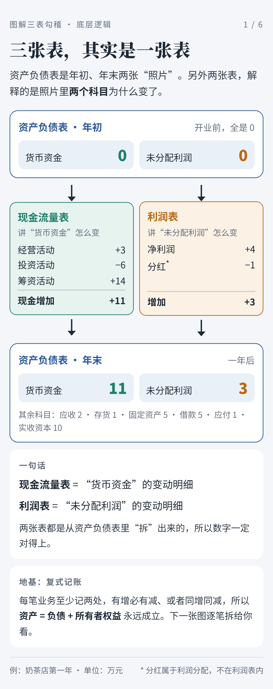
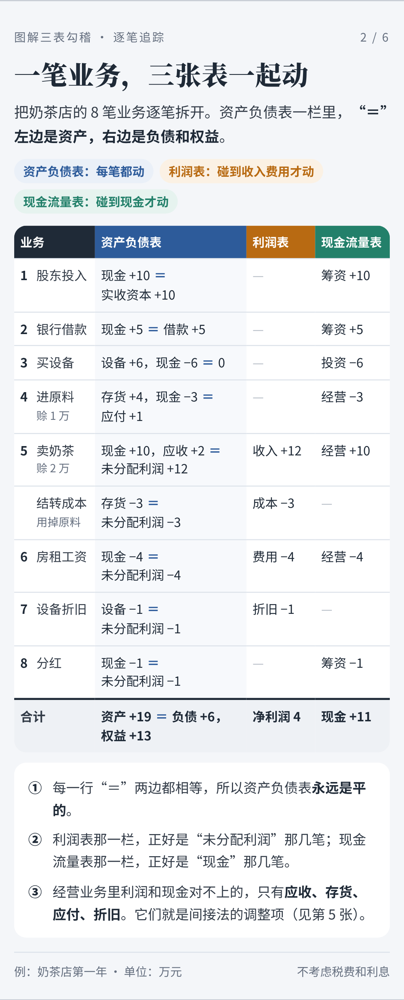
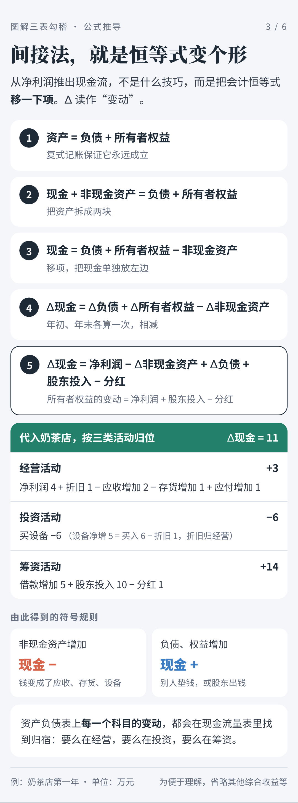
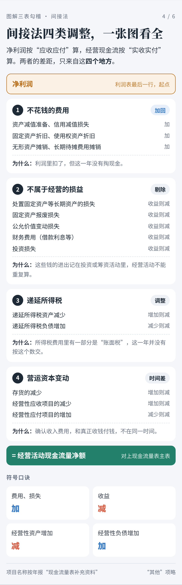
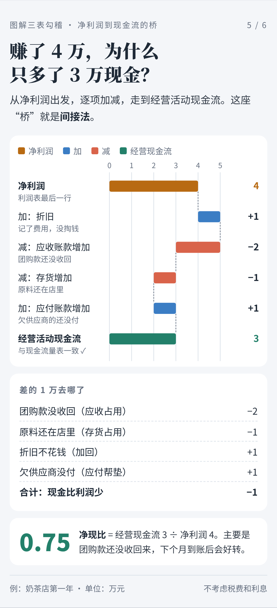
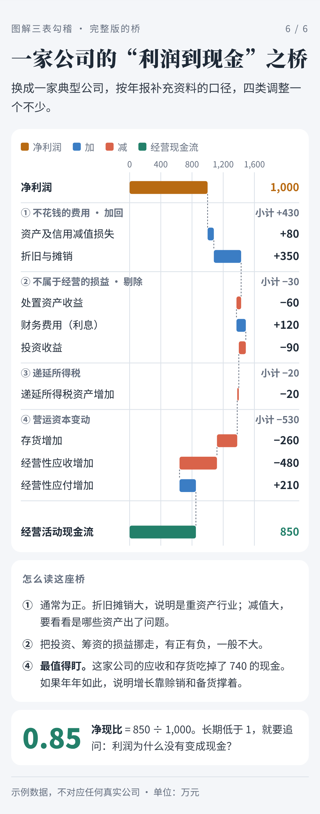
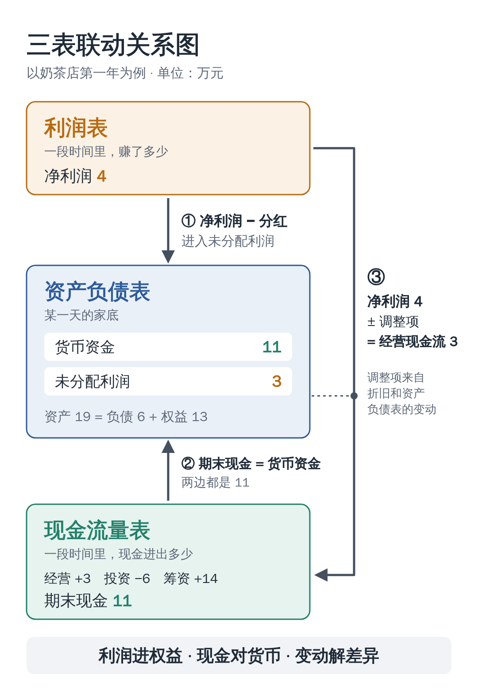

第一次翻财报，很多人会被三张表绕晕：资产负债表、利润表、现金流量表，每张都密密麻麻。
其实这三张表讲的是同一盘生意，只是角度不同。表与表之间的数字环环相扣，会计上把这种关系叫作“勾稽关系”。
今天用一家奶茶店一年的账，把三张表串起来讲。看完这篇，你也能自己动手核对一份财报。
一、三张表，各管什么？
先用一句话认识它们。
资产负债表
某一天，公司有多少家底？
它像一张照片，拍下的是某个时点（比如 12 月 31 日）的状况。
核心公式：资产 = 负债 + 所有者权益
利润表
一段时间里，公司赚没赚钱？
它像一张成绩单，记录一段时间（比如一整年）的经营成果。
核心公式：收入 − 成本费用 = 利润
现金流量表
一段时间里，真金白银进出了多少？
它像一本银行流水，只认实际收到、付出的钱。
核心公式：期初现金 + 本期净流入 = 期末现金
这里有两个区别，是理解三表联动的钥匙：
- 时点和时期：资产负债表看“某一天”，另外两张表看“一段时间”。
- 应收和实收：利润表里，货卖出去就记收入，钱没到账也算；现金流量表里，钱真正到手才算。
所以，利润不等于现金。记住这一点，后面就好懂了。
二、看一家奶茶店的一年
小林开了一家奶茶店。为了好算，我们不考虑税费和利息。第一年发生了 8 件事：
- 自己拿出 10 万元开店（股东投入）
- 向银行借款 5 万元
- 花 6 万元买制冰机、封口机等设备
- 进了 4 万元原料：现付 3 万，另外 1 万先欠着供应商
- 全年卖奶茶 12 万元：收到现金 10 万；另有 2 万是附近公司的团购，约定下个月结账。这些奶茶用掉了 3 万元原料
- 付房租、工资等 4 万元
- 设备折旧 1 万元（设备用了一年，价值“用旧”了 1 万，但不用掏钱）
- 年底给自己分红 1 万元
下面，三张表依次登场（单位：万元）。
利润表：一年赚了多少？
| 项目 | 金额 |
|---|---|
| 营业收入 | 12 |
| 减：营业成本（用掉的原料） | 3 |
| 减：房租、工资 | 4 |
| 减：折旧 | 1 |
| 净利润 | 4 |
现金流量表：钱袋子怎么变？
现金流量表把现金进出分成三类：日常经营、买卖长期资产（投资）、找钱和还钱（筹资）。
| 项目 | 金额 |
|---|---|
| 卖奶茶收到现金 | +10 |
| 买原料付出现金 | −3 |
| 付房租、工资 | −4 |
| 经营活动现金流 | +3 |
| 买设备 | −6 |
| 投资活动现金流 | −6 |
| 股东投入 | +10 |
| 银行借款 | +5 |
| 分红 | −1 |
| 筹资活动现金流 | +14 |
| 现金净增加（3 − 6 + 14） | +11 |
| 期初现金 | 0 |
| 期末现金 | 11 |
资产负债表：年底的家底
| 项目 | 金额 |
|---|---|
| 货币资金 | 11 |
| 应收账款（团购款还没收） | 2 |
| 存货（4 万原料用掉 3 万） | 1 |
| 固定资产（6 万设备减去折旧 1 万） | 5 |
| 资产合计 | 19 |
| 短期借款 | 5 |
| 应付账款（欠供应商的） | 1 |
| 负债合计 | 6 |
| 实收资本 | 10 |
| 未分配利润 | 3 |
| 所有者权益合计 | 13 |
| 负债和所有者权益合计 | 19 |
资产 19 = 负债 6 + 所有者权益 13，账平了 ✓
三、三条勾稽线，把三张表串起来
第 ① 条：利润表 → 资产负债表净利润流进了“未分配利润”
公司赚的钱最终归股东，所以净利润会进入资产负债表的所有者权益。
期末未分配利润 = 期初未分配利润 + 本期净利润 − 分红
奶茶店：0 + 4 − 1 = 3 万，和资产负债表上的 3 万对上了 ✓
实际财报里还要减去“提取盈余公积”，原理一样：利润先进来，再按规定分出去一部分。
第 ② 条：现金流量表 → 资产负债表期末现金对上“货币资金”
现金流量表最后一行“期末现金及现金等价物余额”，应该和资产负债表的“货币资金”对得上。
奶茶店：现金流量表期末现金 11 万 = 资产负债表货币资金 11 万 ✓
小提醒：上市公司的这两个数常常不完全相等。差额一般是受限资金，比如银行承兑汇票保证金、被冻结的存款。它们算在货币资金里，但不能随便动用，所以不算“现金及现金等价物”。差额的原因可以在财报附注里找到；如果差额很大又说不清，就要多留个心眼。
第 ③ 条：利润表 → 现金流量表从净利润，推出经营现金流
奶茶店赚了 4 万利润，经营活动却只流入 3 万现金。少的 1 万去哪了？答案藏在资产负债表的变动里：
净利润 4 + 折旧 1 − 应收增加 2 − 存货增加 1 + 应付增加 1 = 3
结果和现金流量表算出的经营现金流一样 ✓ 这种从净利润倒推经营现金流的方法叫“间接法”，第五节会用图把它一步步拆开。
四、底层逻辑：三张表为什么一定对得上？
前面讲了三条线“是什么”。很多人卡在“为什么”：凭什么三张不同的表，数字就一定对得上？
答案藏在资产负债表本身。

现金流量表讲“货币资金”怎么变，利润表讲“未分配利润”怎么变。它们都是从资产负债表里拆出来的明细。
再往下一层是复式记账：每笔业务都同时记在两个地方。把奶茶店的 8 笔业务逐笔拆开看：

最后，把会计恒等式移一下项，间接法就自己“长”出来了：

五、间接法详解：从净利润到经营现金流
年报里的现金流量表补充资料，会把净利润一步步调成经营现金流。调整项看着多，其实只有四类：

放回奶茶店，这座从净利润到经营现金流的“桥”是这样走的：

换成一家典型公司（示例数据），四类调整都会出现：

读这座桥，最该盯的是营运资本。如果它年年大额为负，说明增长靠赊销和备货撑着，利润迟迟变不成现金。
六、一张图记住三表联动

换个角度看：资产负债表是主角。年初拍一张照片，年末再拍一张，中间发生的事由另外两张表解释：
- 利润表解释了“未分配利润”为什么变了
- 现金流量表解释了“货币资金”为什么变了
- 其余科目的变动，解释了利润和现金之间的差距
浓缩成一句口诀：
利润进权益，现金对货币，变动解差异
七、学会勾稽，能用来做什么？
1. 检查账做得对不对
三条线只要有一条对不上，账一定有错。会计编完报表，第一件事就是核对勾稽关系。
2. 看利润的“含金量”
净现比 = 经营活动现金流 ÷ 净利润
这个比值长期大于 1，说明利润基本都变成了现金；长期远小于 1，甚至为负，就要问一句：钱去哪了？
奶茶店的净现比是 3 ÷ 4 = 0.75，主要是团购款还没收回来，问题不大。
3. 发现风险信号
- 利润年年涨，经营现金流却常年流出：可能大量赊销、存货积压，严重的甚至是虚增收入
- 应收账款增速远远超过收入增速：收入的质量要打个问号
- 账上躺着大笔现金，却同时借了大量高息贷款（俗称“存贷双高”）：要警惕这些钱是否真实、能否动用
单个信号不等于有问题，一定要结合行业特点和财报附注一起看。
写在最后
三张表，讲的是同一个故事：
- 资产负债表告诉你：家底有多厚
- 利润表告诉你：本事有多大
- 现金流量表告诉你：日子过得紧不紧
财务圈有句老话：“利润是观点，现金是事实。”利润里有不少会计判断，现金却是实打实的进出。
下次翻财报，不妨先拿这三条线核一核。
注：为便于理解，本文例子未考虑税费、利息和盈余公积等，实际财报会更复杂，但勾稽原理相同。
你觉得三张表里哪张最难懂？欢迎在评论区聊聊。